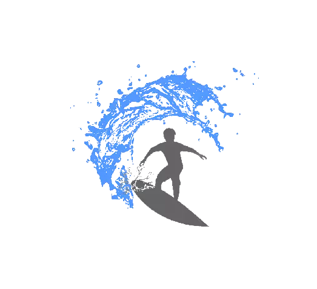

Les Sports Extrêmes
Le Sport Extrême
Un sport extrême est une activité sportive particulièrement dangereuse pouvant exposer à des blessures graves ou à la mort en cas d'erreur dans son exécution. Il peut se pratiquer en milieu aquatique, dans le ciel ou sur terre et implique souvent vitesse, hauteur, engagement physique, ainsi qu'un matériel spécifique.
Les differents sports extrêmes
Le Surf
Le surf est une action ou une pratique physique individuelle de glisse sur les vagues, au bord de l'océan. Avec ce sens général, le surf englobe toutes les pratiques dans les vagues, sans restriction d'une posture ou du type de flotteur.

Le Skate
Un skateboard ou skate ou plus rarement une planche à roulettes est un objet composé d'un plateau sous lequel sont fixés deux essieux maintenant chacun deux roues conçues pour se déplacer, ou pour réaliser des figures sportives.
La MotoCross
Le moto-cross ou motocross est un sport extrême de compétition motocycliste consistant en une course de vitesse sur un circuit tout-terrain accidenté. La première course de moto-cross se déroula à Camberley dans le Surrey en 1924
Le VTT Descente
Le VTT de descente ou vélo de descente est une discipline sportive qui consiste à descendre, à l'aide d'un VTT, des pistes, spécialement conçues, en montagne avec un profil exclusivement descendant.
Le Ski / Snowboard
Le ski est un moyen de locomotion individuel de glisse pratiqué à l'aide de patins longs et étroits appelés skis, fixés aux pieds, et un ensemble de disciplines sportives essentiellement hivernales.
Le snowboard, surf des neiges, planche à neige au Canada ou plus rarement planche de neige, est un sport de glisse sur neige. L'équipement se compose d'une planche de snowboard, d'une paire de fixations et d'une paire de bottes adaptées.
Nous Contacter
Vous pouvez nous contacter à nos adresses mail respective :